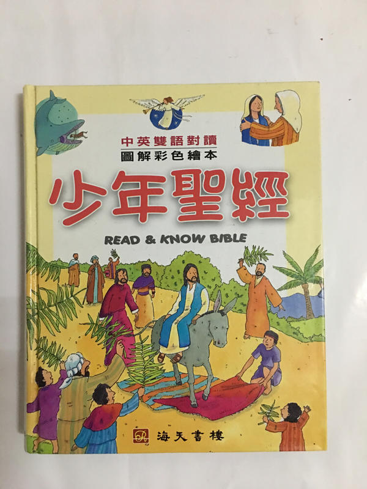

點擊上方的語言選單以切換語言
很多人看見電影中神父用十字架驅趕吸血鬼的橋段，可能沒有意識到十字架的歷史含義與文化轉化過程。其實，十字架最早是一種用來處決罪犯的刑具，而不是原生的宗教象徵。
在基督信仰中，耶穌被釘死在十字架上，而後復活，使得十字架的象徵性徹底翻轉——從原本的死亡與羞辱，變成了救贖與恩典的標誌。
在台灣，「基督教」這個詞常被誤用來指「基督新教」（Protestantism），但其實「基督教」（Christianity）是一個更廣泛的宗教體系，包含：這三者都是基督信仰的重要分支，不應混為一談。
- 天主教（Catholicism）
- 東正教（Eastern Orthodoxy）
- 基督新教（Protestantism）
耶穌與門徒生活在一世紀的巴勒斯坦地區，從人種上屬於中東人。他們有黑髮、深色眼睛與較深的膚色，而非歐洲藝術常描繪的金髮碧眼形象。在一些考究的聖經動畫或繪本中，會看到更貼近歷史事實的描繪方式。
補充：從人類學分類來看，中東人與歐洲人同屬「高加索人種（Caucasoid）」的一支，但這個分類主要是根據顱骨與體質特徵，不代表他們的膚色或文化完全相同。很多中東人膚色偏深、五官輪廓鮮明，與現代大眾對「白人」的刻板印象有明顯落差，這也說明了為何耶穌不可能是金髮碧眼的北歐人模樣。
吸血鬼原本是東歐民間信仰中對死亡與疾病的解釋，與基督信仰無關。但隨著中世紀基督教文化的主導地位，吸血鬼被納入惡靈、邪靈的範疇。
因此在現代文學與電影中，常看到吸血鬼懼怕聖水與十字架的設定。例如電影《凡赫辛》中，主角用沾有聖水的十字弓攻擊吸血鬼新娘後，她立刻化為灰燼，這正是文化融合的結果。
這就像法國麵包在越南殖民時期被引入，後來演變為越南料理中的 Bánh Mì，成為當地文化的一部分。文化是流動且會被在地化、再語境化的。
文化與信仰的融合，往往比我們表面看到的更為深刻。從宗教符號、歷史語境到跨文化現象，每一個元素都值得我們細細觀察與反思。